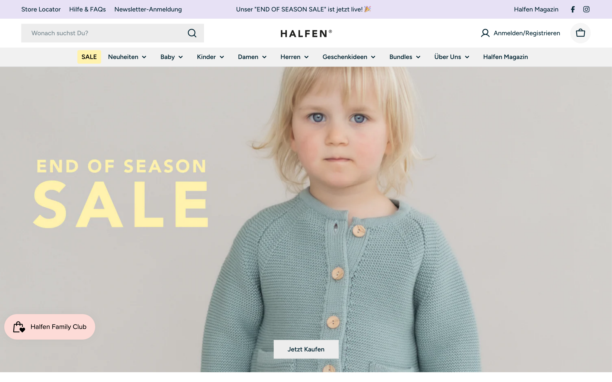
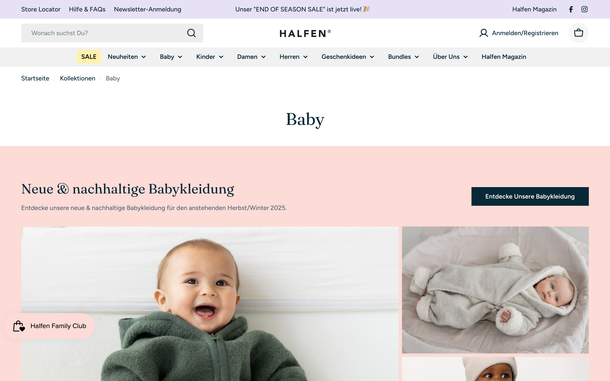
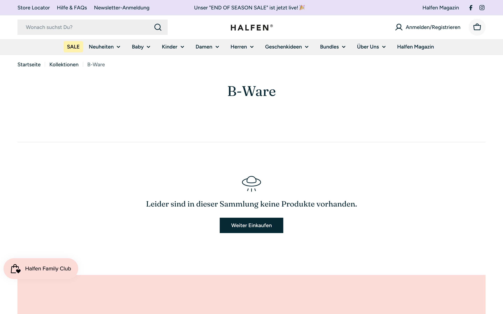
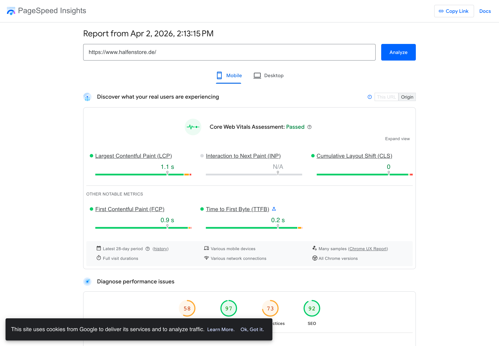
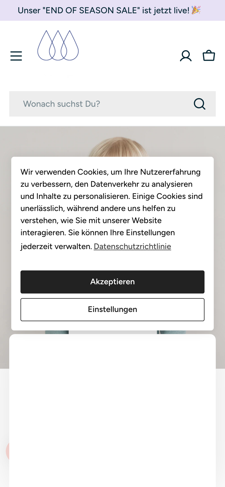
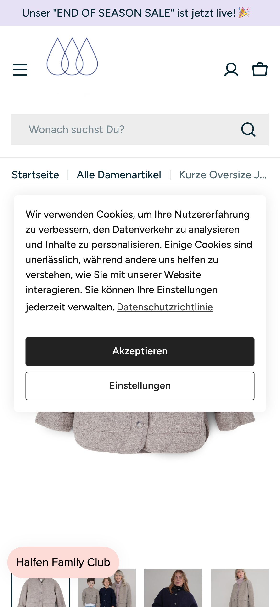
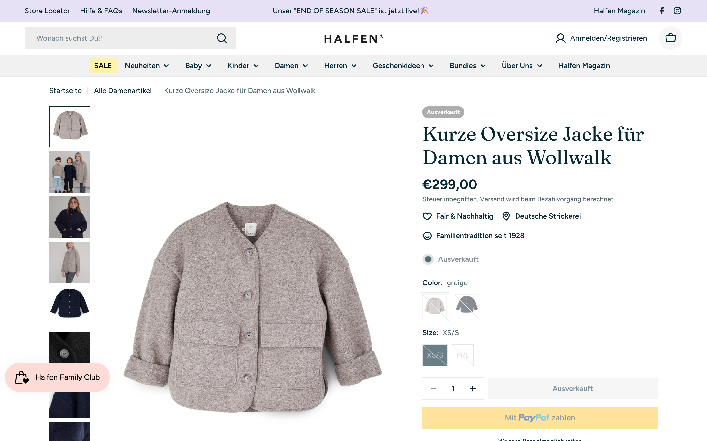

Inhaltsverzeichnis
HALFEN verdient einen besseren Online-Store
HALFEN ist eine außergewöhnliche Marke — Familientradition seit 1928, eigene Strickerei, GOTS-zertifizierte Merinowolle, Made in Germany. Diese Geschichte überzeugt offline. Online wird sie allerdings durch strukturelles Chaos, fehlende Vertrauenselemente und langsame Ladezeiten untergraben.

Die wichtigsten Befunde
Wir haben Ihren Store technisch durchleuchtet — die Sitemap, die Produkt-Datenbank, alle 116 Kategorien und die geladenen Scripte. Das sind die Kernprobleme:
| Problem | Bewertung | Was das bedeutet |
|---|---|---|
| 116 Kategorien für 419 Produkte | Kritisch | Ihre Kunden finden dasselbe Produkt auf 5-8 verschiedenen Seiten. Google weiß nicht mehr, welche Seite die wichtige ist. |
| 70% der Produkte ohne strukturierte Daten | Kritisch | Filter auf Ihren Kategorieseiten funktionieren nicht richtig, weil die meisten Produkte keine Metafelder (Material, Zielgruppe, Saison) gepflegt haben. |
| 7+ externe Apps verlangsamen den Shop | Hoch | Besonders die Übersetzungs-App Weglot bremst jede Seite um 1-3 Sekunden aus. |
| Fehlende Vertrauenselemente | Hoch | Keine Größentabelle, keine Gütesiegel, keine sichtbaren Versandkosten auf der Produktseite. |
| Doppelte Seiten im Store | Mittel | Es gibt z.B. zwei Impressum-Seiten, zwei Kontaktseiten und drei Versionen Ihrer Philosophie-Seite. |
Die gute Nachricht: Ihr Shopify-Theme (Hyper v1.3.0) ist modern und technisch solide. Es muss nicht ausgetauscht werden. Die Probleme liegen in der Struktur, den Daten und den installierten Apps — und die lassen sich alle innerhalb des bestehenden Themes lösen.
Vier Bereiche, vier Noten
Wir bewerten jeden Bereich auf einer Skala von 0 bis 100 Punkten. Ab 70 Punkten ist ein Bereich gut aufgestellt, unter 40 besteht dringender Handlungsbedarf.
116 Kategorien für 419 Produkte — das ist das Kernproblem
Stellen Sie sich vor, Sie hätten ein Geschäft mit 419 Artikeln, aber 116 verschiedene Regale und Schilder. Viele Regale zeigen die gleichen Produkte, manche Schilder sind fast identisch. Genau das passiert in Ihrem Online-Store — und es verwirrt sowohl Ihre Kunden als auch Google.
Beispiel: Der Baby-Bereich hat 10+ Kategorien, die sich überlappen
Wenn eine Kundin nach einem Wollwalk-Overall für ihr Baby sucht, findet sie in Ihrem Store mindestens 5 verschiedene Kategorieseiten, die ähnliche oder identische Produkte zeigen. Statt auf einer klaren Seite zu landen, muss sie raten, welche die richtige ist.
| Kategorie in Ihrem Store | Adresse | Problem |
|---|---|---|
| Baby | halfenstore.de/collections/baby | Hauptkategorie |
| Alles für Babies | …/alles-fur-babies | Doppelt — zeigt dieselben Produkte wie „Baby" |
| Alle Babyartikel | …/alle-babyartikel | Doppelt — nochmal dasselbe |
| Nachhaltige Babykleidung | …/nachhaltige-babykleidung | Schadet SEO — konkurriert mit „Baby" bei Google |
| Babykleidung aus Merinowolle | …/babykleidung-aus-merinowolle | Schadet SEO — wieder gleiche Produkte |
| Baby Wollwalk Overalls | …/baby-wollwalk-overalls | Zu kleinteilig — sollte Filter innerhalb „Baby" sein |
| Babywalk | …/babywalk | Doppelt — überschneidet sich mit Baby Wollwalk |
Dasselbe Muster wiederholt sich für Kinder, Damen und Herren — jeweils mit 8-10 überlappenden Kategorien.

Leere und veraltete Kategorien, die noch online sind
Im Store gibt es Kategorieseiten, die leer sind, veraltete Saisonware zeigen oder gar nicht zur Marke passen. Jede dieser Seiten ist für Ihre Kunden erreichbar — zum Beispiel über die Google-Suche. Das wirkt unprofessionell und schadet dem Vertrauen.

| Kategorie | Problem |
|---|---|
| Herbst/Winter 2025 | Veraltete Saison — wir haben April 2026. Wirkt, als würde der Store nicht gepflegt. |
| B-Ware | Leere Seite, für Kunden sichtbar. „B-Ware" passt nicht zum Premium-Image. |
| vendors-q-halfen | Automatisch generierte Vendor-Collection (Shopify-Standard). Sollte per robots.txt oder noindex von Google ausgeschlossen sein — prüfen, ob das der Fall ist. |
| Knete für Kinder mit Spielzeug | Passt nicht zum Sortiment — Wollkleidung und Kinderknete? |
| Steamery | Eine fremde Marke als eigene Hauptkategorie neben Ihren eigenen Produkten. |
Auch bei den Info-Seiten gibt es Dopplungen
Neben den Kategorieseiten gibt es 27 Info-Seiten in Ihrem Store (Über Uns, Kontakt, Impressum usw.). Mindestens 8 davon sind doppelt oder veraltet. Das passiert oft, wenn neue Seiten angelegt werden, ohne die alten zu löschen.
| Thema | Vorhandene Seiten |
|---|---|
| Impressum | /pages/impressum + /pages/impressum-1 — zwei Versionen |
| Kontakt | /pages/kontakt + /pages/kontakt-alt — alte Version noch online |
| Über Uns / Philosophie | 4 verschiedene Seiten: ueber-uns, halfen-strickerei, unsere-geschichte, unsere-materialien |
| Geschenkideen | Existiert gleichzeitig als Info-Seite UND als Kategorie UND als zweite Kategorie |
So sollte die Struktur aussehen: 20-25 klare Kategorien
Statt 116 Kategorien braucht Ihr Store maximal 25. Alles, was darüber hinausgeht — zum Beispiel „nur Wollwalk-Produkte" oder „nur Neuheiten" — wird über Filter gelöst. Ein Beispiel: Statt einer eigenen Kategorie „Baby Wollwalk Overalls" gibt es in der Kategorie „Baby" einen Filter für „Material: Wollwalk" und einen für „Typ: Overall".
| Hauptkategorie | Unterkategorien oder Filter |
|---|---|
| Baby | Overalls, Jacken, Hosen, Strick, Accessoires |
| Kinder | Jacken, Hosen & Kleider, Strick, Accessoires |
| Damen | Jacken & Mäntel, Pullover & Westen, Hosen & Kleider, Accessoires |
| Herren | Jacken & Mäntel, Pullover, Accessoires |
| Sale | Automatisch alle reduzierten Artikel |
| Geschenkideen | Zur Geburt, Taufe, Einschulung, Geschenkboxen, Gutscheine |
| Bundles | Bestehende Sets beibehalten |
| Pflege | Steamery + Pflegeprodukte |
Die meisten Produkte haben keine strukturierten Produktdaten
Jedes Produkt in Ihrem Shopify-Store hat unsichtbare Felder — einen „Produkttyp" (z.B. Jacke, Mütze, Hose) und sogenannte Metafelder (strukturierte Datenfelder für Material, Zielgruppe, Saison usw.). Seit Shopify OS 2.0 sind Metafelder der moderne Standard für Filter und die Shopify-eigene Search & Discovery App. Ihr Store nutzt aktuell weder Metafelder noch ein einheitliches Daten-Schema — bei den meisten Produkten sind diese Felder leer.
Konkretes Beispiel aus Ihrem Store
Wir haben die ersten 50 Produkte aus Ihrer Datenbank ausgelesen. Hier sehen Sie das Problem: Manche Produkte haben Typ und Tags — aber die Mehrheit hat gar nichts. Die Daten sind willkürlich gepflegt.
| Produkt in Ihrem Store | Produkttyp | Metafelder / Produktdaten |
|---|---|---|
| Kinder Beanie (Sale) | Mütze | Beanie, Herbst, Mütze |
| Grobstrick Sweater (Sale) | Sweater | Herbst, Pullover, Sweater |
| Feinstrick Hose mit hohem Bündchen | leer | leer |
| Wickeljacke (Schlüttli) für Babys | leer | leer |
| Wollsocken für Kinder & Babys | Socken | leer |
| Schwangerschaftseinsatz | leer | leer |
Was das für Ihre Kunden bedeutet: Wenn jemand auf einer Kategorieseite nach „Wollwalk" filtert, tauchen viele Produkte nicht auf — weil die entsprechenden Produktdaten fehlen. Die Suche im Store liefert ebenfalls unvollständige Ergebnisse. Ihr Store zeigt Ihren Kunden nicht, was Sie tatsächlich anbieten.
So sollte jedes Produkt aussehen
Jedes Ihrer 419 Produkte braucht mindestens diese 5 Informationen als Metafelder (nicht als klassische Tags). Metafelder erlauben feste Datentypen — z.B. ein Dropdown „Material" mit den Optionen Wollwalk, Merinowolle, Baumwolle. Das verhindert Tippfehler und macht die Datenpflege sauber. Die Filter auf den Kategorieseiten werden dann über die Shopify-eigene Search & Discovery App konfiguriert.
| Metafeld | Typ | Beispiel für den „Walk-Overall für Babys" |
|---|---|---|
| Produkttyp | Shopify-Standardfeld | Overall |
| Zielgruppe | Dropdown (Metafeld) | Baby |
| Material | Dropdown (Metafeld) | Wollwalk |
| Saison | Dropdown (Metafeld) | Herbst-Winter |
| Anlass | Multi-Select (Metafeld) | Erstausstattung, Outdoor |
Der Store ist zu langsam — besonders auf dem Handy
Google misst, wie schnell eine Website lädt, und vergibt Punkte von 0 bis 100. Unter 50 gilt als schlecht, über 90 als gut. Ihr Store erreicht auf dem Handy aktuell 58 von 100 Punkten — das ist Mittelmaß und kostet Sie Besucher und Umsatz.
Wichtige Unterscheidung: Die reinen Ladezeit-Kernwerte (Core Web Vitals) sind tatsächlich solide — LCP 1.1 Sekunden ist gut (Grenze: 2.5s) und CLS 0 ist perfekt. Der schlechte Gesamtscore von 58 kommt vor allem durch lange JavaScript-Blockierzeit (Total Blocking Time) und verzögerte Interaktivität — beides verursacht durch die vielen externen Apps, die nach dem Seitenaufbau im Hintergrund weiterladen.

Diese Apps bremsen Ihren Store
Shopify-Apps fügen zusätzlichen Code hinzu, der bei jedem Seitenaufruf geladen wird. Je mehr Apps, desto langsamer die Seite. Besonders problematisch: Weglot, die Übersetzungs-App, manipuliert den gesamten DOM (Seiteninhalt) clientseitig nach dem Laden — das blockiert den Main Thread und erhöht die Total Blocking Time, den Haupttreiber des niedrigen Performance Scores.
| App | Wofür sie da ist | Wie sehr sie bremst |
|---|---|---|
| Weglot | Übersetzt den Store in andere Sprachen | Stark — manipuliert den DOM clientseitig, blockiert Main Thread |
| Smile.io | Treuepunkte-Programm („Halfen Family Club") | Mittel — lädt eigenes Widget auf jeder Seite |
| FastBundle | Produkt-Sets und Bundles | Mittel |
| Elfsight Widgets | Zusätzliche Website-Elemente | Mittel — lädt von externem Server |
| hCaptcha | Schutz vor Spam-Bots | Gering |
| Google Analytics | Besucherstatistiken | Gering |
| Facebook Pixel | Werbung auf Facebook/Instagram | Gering |
Offene Frage: Wird Mehrsprachigkeit überhaupt benötigt?
In Ihrem Store ist die Übersetzungs-App Weglot installiert — sie übersetzt den gesamten Shop automatisch in andere Sprachen. Weglot ist gleichzeitig die App mit dem größten negativen Einfluss auf die Ladezeit. Bevor wir optimieren, müssen wir klären:
Fragen an Sie:
1. Verkaufen Sie aktiv international? Wenn ja: In welche Länder und in welchen Sprachen?
2. Wie viel Prozent Ihres Umsatzes kommen von nicht-deutschsprachigen Kunden?
3. Nutzen Kunden die Sprachumschaltung tatsächlich? (Messbar in Weglot-Dashboard oder Google Analytics)
Falls die Antwort „wenig bis gar nicht" ist, empfehlen wir Weglot zu entfernen — das allein würde die Ladezeit spürbar verbessern. Falls Mehrsprachigkeit wichtig ist, gibt es mit Shopify Markets + Translate & Adapt eine integrierte Alternative. Der Vorteil: Die Übersetzungen werden in Shopifys eigenem System gespeichert und serverseitig in die Liquid-Templates gerendert — im Gegensatz zu Weglots clientseitigem DOM-Rewriting. Der Nachteil: Automatische Übersetzung ist weniger komfortabel als bei Weglot und erfordert teilweise manuelle Nacharbeit.
Mobile Darstellung: Cookie-Banner blockiert den gesamten Inhalt
Auf dem Handy überdeckt das Cookie-Banner den kompletten sichtbaren Bereich. Ihre Kunden sehen beim ersten Besuch weder Produkte noch Ihre Marke — nur einen Cookie-Hinweis. Das ist kein guter erster Eindruck.


Weitere technische Probleme
Neben den Apps gibt es weitere technische Bremsen, die einzeln klein wirken, aber zusammen die Ladezeit spürbar verlängern:
srcset- und sizes-Attribute setzen. In Ihrem Store werden Produktfotos mit bis zu 3.115 Pixel Breite angefordert, obwohl das darstellende Element deutlich kleiner ist. Das deutet auf fehlende oder unvollständige responsive Bildkonfiguration im Theme hin.Google verliert die Übersicht — genau wie Ihre Kunden
Suchmaschinenoptimierung (SEO) bestimmt, ob Ihre Produkte bei Google gefunden werden. Je besser die SEO, desto mehr Kunden kommen kostenlos über die Google-Suche. Das Problem: Die 116 Kategorien verwirren nicht nur Menschen, sondern auch Google.
Hinweis zur Datengrundlage: Dieser Audit basiert auf öffentlich zugänglichen Daten — manuelle Google-Suchen, PageSpeed Insights, Sitemap-Analyse und Quellcode-Inspektion. Die identifizierten strukturellen Probleme (Keyword-Kannibalisierung, Duplicate Content, fehlende Produktdaten) sind unabhängig von Traffic-Zahlen klar belegbar. Für die exakte Bezifferung des Traffic- und Umsatzpotenzials — insbesondere die Priorisierung der Maßnahmen nach ROI — empfehlen wir im nächsten Schritt einen Lesezugriff auf Ihre Google Search Console.
Wie 116 Kategorien Ihr Google-Ranking zerstören
Wenn jemand „nachhaltige Babykleidung" googelt, findet Google in Ihrem Store gleich 5 Seiten, die dafür in Frage kommen. Google weiß dann nicht, welche die wichtige ist — und zeigt im Zweifel keine davon an. Statt einer starken Seite haben Sie fünf schwache.
| Problem | Einfach erklärt |
|---|---|
| Seiten konkurrieren untereinander | „Baby", „Nachhaltige Babykleidung" und „Babykleidung aus Merinowolle" kämpfen alle um dieselben Suchbegriffe — statt dass eine starke Seite ganz oben steht. |
| Google muss zu viele Seiten prüfen | Google hat ein Budget, wie viele Seiten es pro Website prüft. 116 Kategorien + 419 Produkte + 27 Info-Seiten = Google kommt nicht hinterher. |
| Viele Kategorien haben zu wenig Inhalt | Kategorien mit nur 2-3 Produkten bewertet Google als „dünne" Seiten ohne Mehrwert — das schadet dem gesamten Store. |
Shopify-spezifisch: Doppelte Produkt-URLs
Shopify erzeugt für jedes Produkt automatisch zwei URL-Varianten: die eigentliche Produkt-URL (z.B. /products/walk-overall) und eine zweite mit dem Kategorie-Pfad (z.B. /collections/baby/products/walk-overall). Shopify setzt zwar einen Canonical Tag auf die kurze URL — Google weiß also, welche die „richtige" ist. Allerdings sollte geprüft werden, ob das Hyper Theme in den Product Cards intern auf die kurzen /products/-URLs verlinkt. Falls der Liquid-Code den within: collection-Parameter nutzt, verlinkt das Theme auf die langen Collection-URLs, was unnötiges Crawl-Budget verbraucht.
Andere Shops ranken besser für Ihre eigenen Produkte
Wir haben konkrete Suchbegriffe bei Google eingegeben, die Ihre Kunden verwenden. Das Ergebnis: Händler, die Ihre Produkte weiterverkaufen, stehen bei Google vor Ihrem eigenen Store.
• cocoome.com (Position 1)
• littlegreenie.de (Position 2) — verkauft Ihre Produkte weiter
• babyone.de (Position 3)
• hug-and-grow.de (Position 8) — verkauft Ihre Produkte weiter
Das bedeutet: Kunden, die genau Ihr Kernprodukt suchen, finden Sie nicht — sondern kaufen es bei Händlern, die daran mitverdienen.
• Position 2:
/collections/baby• Position 4:
/collections/mitwachsende-babykleidungDas ist ein typisches Symptom der 116-Kategorien-Problematik: Zwei Ihrer eigenen Seiten konkurrieren gegeneinander, statt dass eine starke Seite auf Position 1 steht. Google nennt das „Keyword-Kannibalisierung".
Ungenutzte SEO-Chance: Blog
Ihr „Halfen Magazin" (Blog) hat enormes Potenzial. Aber aktuell verschenken Sie Tausende von möglichen Besuchern, die über Google kommen könnten — kostenlos, ohne Werbebudget.
• engel-natur.de (Position 1) — ein Wettbewerber
• filzundwolle.de (Position 2) — ein Blog
• littlegreenie.de (Position 3) — Ihr eigener Händler
• utopia.de (Position 8) — ein Magazin
Ein einziger guter Blog-Artikel zu „Wollwalk pflegen" könnte auf Seite 1 bei Google landen und jeden Monat Hunderte neue Besucher bringen — Besucher, die sich bereits für genau Ihr Produkt interessieren.
Empfehlung: Starten Sie einen Blog-Content-Plan mit 2 Artikeln pro Monat. Themen mit hohem Suchvolumen, bei denen HALFEN als Hersteller authentisch punkten kann: „Wollwalk richtig pflegen", „Merinowolle vs. Baumwolle für Babys", „Nachhaltige Kinderkleidung — worauf achten?", „Walk-Overall: So finden Sie die richtige Größe".
Fragen, die Ihre Kunden googeln — und die Ihr Store nicht beantwortet
Wir haben die häufigsten Fragen recherchiert, die potenzielle Kunden bei Google eingeben, wenn sie sich für Wollwalk, Merinowolle und Babykleidung interessieren. Bei keiner einzigen dieser Fragen erscheint HALFEN auf Seite 1 — obwohl Sie als Hersteller die glaubwürdigste Quelle wären. Stattdessen beantworten Ihre Händler und Wettbewerber diese Fragen und gewinnen die Kunden.
Das ist besonders wichtig, weil Google und KI-Suchmaschinen (ChatGPT, Perplexity, Google AI Overviews) FAQ-Inhalte bevorzugt als Antwortquelle nutzen. Wer die Fragen beantwortet, wird zitiert — und bekommt den Kunden.
• nadeloehrle.de (Position 1) — ein Wettbewerber
• emmanoah.de (Position 2) — ein Wettbewerber
• waldkindergarten-tipps.de (Position 3) — ein Blog
Chance: Ein FAQ-Eintrag oder Blog-Artikel „Was ziehe ich meinem Baby unter den Wollwalk-Overall an?" mit konkreten Outfit-Empfehlungen für jede Jahreszeit.
• littlegreenie.de (Position 1) — Ihr eigener Händler
• babyboxfamily.com (Position 2) — verkauft Ihre Produkte
• hug-and-grow.de (Position 3) — verkauft Ihre Produkte
Chance: HALFEN als Hersteller kann das glaubwürdiger beantworten als jeder Händler. Ein Vergleichsartikel mit eigenen Produktfotos wäre sehr wirkungsvoll.
• internaht.de (Position 1) — ein Wettbewerber
• emmanoah.de (Position 2) — ein Wettbewerber
• wichtelkidz.de (Position 3) — ein Wettbewerber
Chance: Genau hier fehlt auch die Größentabelle im Store. Eine eigene Größenberatungsseite mit Messanleitung könnte gleichzeitig als SEO-Seite und als Kundenhilfe dienen.
• comazo.de (Position 1)
• ofa.de (Position 2)
• ritter-decken.de (Position 3)
Chance: HALFEN verwendet GOTS-zertifizierte, superfeine Merinowolle. Ein FAQ-Eintrag „Kratzt Merinowolle? — Warum unsere Wolle besonders hautfreundlich ist" mit Zertifikats-Verweis wäre ein Trust-Signal UND SEO-Gewinn.
• littlegreenie.de (Position 1) — Ihr Händler
• baby-wetter.de (Position 3) — ein Blog
• emmanoah.de (Position 4) — ein Wettbewerber
Chance: Ein ehrlicher FAQ-Eintrag „Wollwalk und Regen — wasserabweisend ja, wasserdicht nein" mit praktischen Tipps für Eltern.
Warum das auch für KI-Suche wichtig ist: ChatGPT, Perplexity und Google AI Overviews ziehen ihre Antworten aus genau diesen Inhalten. Wer eine gut strukturierte FAQ-Seite mit Schema-Markup hat, wird von KI-Suchmaschinen als Quelle zitiert — mit Link zum Store. Aktuell zitieren diese KI-Tools Ihre Händler und Wettbewerber, nicht Sie.
Empfehlung: Bauen Sie eine zentrale FAQ-Seite im Store auf und beantworten Sie dort die 15-20 häufigsten Kundenfragen — mit FAQ-Schema-Markup (strukturierte Daten für Google). Ergänzen Sie jede Antwort mit Links zu den passenden Produkten. Das kostet ca. 6-8 Stunden einmalig und bringt dauerhaft kostenlosen Traffic über Google und KI-Suchmaschinen.
Gute Nachricht: Ihr Store ist für alle KI-Suchmaschinen zugänglich. Wir haben geprüft, ob Ihre robots.txt KI-Crawler blockiert — das ist bei vielen Shops der Fall und verhindert, dass ChatGPT, Perplexity oder Google AI Overviews Ihre Produkte als Quelle nutzen können. Ergebnis: halfenstore.de erlaubt alle relevanten KI-Bots (Google Gemini, OpenAI/ChatGPT, Anthropic Claude, Perplexity). Die technische Voraussetzung für KI-Sichtbarkeit ist also gegeben — was fehlt, sind die Inhalte (FAQ, Blog, strukturierte Daten), die die KI-Systeme als Antwortquelle nutzen können.
Ihre Kunden finden sich nicht zurecht
Ein gutes Einkaufserlebnis bedeutet: Der Kunde findet schnell, was er sucht, vertraut dem Shop und kauft ohne Hindernisse. Aktuell gibt es an allen drei Stellen Probleme.
Problem 1: Zu viele Wege zum gleichen Produkt
Durch die 116 Kategorien gibt es für eine einzige Suche mehrere Einstiegspunkte. Das verwirrt — und verwirrte Kunden kaufen weniger.
Sie findet in Ihrem Store 5 verschiedene Kategorieseiten mit überlappenden Produkten:
5 verschiedene Seiten — welche ist die richtige?
Er findet eine Info-Seite UND mehrere Kategorien — verwirrend:
4 verschiedene Seiten — Info-Seiten und Kategorien gemischt
Problem 2: Wichtige Vertrauenselemente fehlen auf der Produktseite
Wenn ein Kunde auf einer Produktseite landet, entscheidet er in Sekunden: Vertraue ich diesem Shop? Kaufe ich hier? Ihr Store macht es ihm schwer, weil wichtige Informationen fehlen oder versteckt sind.

| Was fehlt | Warum das wichtig ist |
|---|---|
| Größentabelle | Fehlt — Bei Mode-Shops ist eine Größentabelle Pflicht. Ohne bestellen Kunden gar nicht erst oder es gibt viele Retouren. |
| Kundenbewertungen | Nicht vorhanden — Es ist keine Bewertungs-App (wie Judge.me, Loox oder Yotpo) installiert. Die vorhandene App Smile.io ist ein Treuepunkte-Programm, keine Bewertungslösung. 92% der Online-Käufer lesen Bewertungen vor dem Kauf. |
| Gütesiegel / Trust-Badges | Keine — Kein Trusted Shops, kein EHI-Siegel. Besonders für Neukunden ein wichtiges Vertrauenssignal. |
| USP-Leiste | Fehlt — „Made in Germany", „GOTS-zertifiziert", „Kostenloser Versand ab X€" — diese Stärken sollten auf jeder Seite sofort sichtbar sein, nicht erst nach langem Scrollen. |
| Versandkosten auf der Produktseite | Nicht sichtbar — Unklare Versandkosten sind einer der häufigsten Gründe für Kaufabbrüche. |
Was gut ist: Die Produktseite zeigt bereits „Fair & Nachhaltig", „Deutsche Strickerei" und „Familientradition seit 1928". Das sind gute Ansätze — sie müssen nur prominenter und auf allen Seiten sichtbar sein.
Fixen — nicht neu bauen
Ein komplett neues Theme würde keines der Probleme lösen: Die 116 Kategorien bleiben, die fehlenden Produktdaten bleiben, die langsamen Apps bleiben. Alle Probleme liegen in der Konfiguration und den Daten — nicht im Theme selbst. Deshalb ist eine Sanierung des bestehenden Stores der klügere Weg.
Neues Theme / Rebuild
- Löst das Kategorie-Chaos? Nein — die 116 Kategorien bleiben
- Löst das Daten-Problem? Nein — fehlende Tags bleiben leer
- Löst das App-Problem? Nein — Weglot bremst auch ein neues Theme
- Zeitaufwand 120-200+ Stunden
- SEO-Risiko Hoch — Adressen ändern sich, Google-Rankings gehen verloren
- Kosten 8.000-15.000 EUR+
Bestehenden Store sanieren
- Löst das Kategorie-Chaos? Ja — von 116 auf 25 bereinigen
- Löst das Daten-Problem? Ja — alle 419 Produkte systematisch pflegen
- Löst das App-Problem? Ja — unnötige Apps entfernen/ersetzen
- Zeitaufwand ca. 70 Stunden + ca. 3 Tage intern (siehe Maßnahmenplan)
- SEO-Risiko Niedrig — bestehende Adressen bleiben erhalten
- Kosten 4.000-7.000 EUR
In 8 Wochen zum sauberen Store
Der Plan ist in 6 aufeinander aufbauende Phasen gegliedert. Zuerst werden die Daten vorbereitet, dann die Struktur bereinigt, dann das Einkaufserlebnis verbessert, dann die Geschwindigkeit optimiert und zum Schluss der Content ausgebaut.
- Alle 419 Produkte per Matrixify/CSV exportieren und Datenlücken dokumentieren 1h
- Für jede der 116 Kategorien festhalten: welche Produkte, wie viele, Überschneidungen 3h
- Neue Ziel-Struktur (20-25 Kategorien) mit Ihnen abstimmen 2h
- Weiterleitungsplan: wohin sollen gelöschte Kategorien umleiten? 2h
- Metafeld-Definitionen anlegen (Zielgruppe, Material, Saison, Anlass) mit festen Dropdown-Werten 2h
- Alle 419 Produkte per Bulk-Export (Matrixify oder Shopify CSV) mit Produkttyp und Metafeldern befüllen 10h
- Doppelte Produkte in der Sitemap bereinigen 2h
- ~90 überflüssige Kategorien löschen (Shopify setzt 301-Redirects automatisch, Ziel-URLs vorab definieren) 6h
- Verbleibende ~25 Kategorien mit guten Titeln, Beschreibungen und Bildern versehen 6h
- Shopify Search & Discovery App einrichten: Filter auf Kategorieseiten basierend auf den neuen Metafeldern 3h
- Navigation/Menü auf die neue Struktur umbauen 3h
- Doppelte Info-Seiten zusammenführen (Impressum, Kontakt, Philosophie) 3h
- USP-Leiste einbauen: „Made in Germany", „GOTS-zertifiziert", „Kostenloser Versand ab X€" 2h
- Trust-Badges (Gütesiegel) auf allen Produktseiten 2h
- Größentabelle auf allen Produktseiten 3h
- Google-Beschreibungen für die 30 wichtigsten Seiten optimieren 6h
- Weglot prüfen: Wird Mehrsprachigkeit genutzt? Ggf. durch Shopify Markets + Translate & Adapt ersetzen 6h
- Elfsight-Widgets entfernen oder durch eingebaute Shopify-Funktionen ersetzen 3h
- Liquid-Templates prüfen:
image_url-Filter mit korrektenwidth- undsizes-Attributen versehen, damit Shopifys CDN optimale Bildgrößen (WebP/AVIF) ausliefert 2h - Schriftarten auf das Nötigste reduzieren 2h
- Produktbeschreibungen überarbeiten: Materialinfos, Pflege, Besonderheiten, Suchbegriffe 12h
- Erweiterte Google-Daten einbauen (Bewertungen, FAQ, Breadcrumbs) 4h
- Bewertungs-App einrichten (z.B. Judge.me oder Loox) und Kundenbewertungen prominent auf Produktseiten anzeigen 4h
- Blog-Strategie starten: 2 Artikel pro Monat zu Wollwalk, Pflege, Nachhaltigkeit 4h
Gesamtaufwand: ca. 70 Stunden auf unserer Seite über 8 Wochen. Geschätzte Kosten: 4.000 - 7.000 EUR.
Aufwand auf Ihrer Seite: Der Großteil der Arbeit (Content, Datenaufbereitung, Theme-Anpassungen) wird von uns vorbereitet und als fertige Dateien geliefert. Auf HALFEN-Seite fallen geschätzt ca. 3 Personentage an — für den Import der vorbereiteten Daten, das Löschen der überflüssigen Kategorien, die App-Konfiguration (Search & Discovery, ggf. Weglot-Ablösung) und die finale Prüfung im Store.
Daran messen wir den Erfolg
Nach Abschluss der 8-Wochen-Sanierung sollten sich folgende Werte messbar verbessern:
* Absprungrate basiert auf dem Branchendurchschnitt für Fashion-E-Commerce (Quelle: Contentsquare Digital Experience Benchmark 2025). Der tatsächliche Wert ist nur über Ihr Google Analytics einsehbar.
** Exakte Traffic-Zahlen und ROI-Berechnung nach Zugang zur Google Search Console.
HALFEN hat alles, was ein erfolgreicher Online-Store braucht — außer einen aufgeräumten Store
Lassen Sie uns ehrlich sein: Die Marke HALFEN ist außergewöhnlich. Eine Familientradition seit 1928, eine eigene Strickerei in Deutschland, GOTS-zertifizierte Merinowolle, 28.000 Instagram-Follower und eine treue Community, die Ihre Produkte liebt. Das sind Qualitäten, von denen viele Marken nur träumen können.
Aber der Online-Store wird dieser Marke aktuell nicht gerecht. Kunden, die über Google, Instagram oder eine Empfehlung zu Ihnen kommen, landen in einem Store mit 116 Kategorien, in dem sie sich verlieren. Produktdaten sind lückenhaft, Ladezeiten zu lang, Vertrauenselemente fehlen. Das Ergebnis: Kunden, die eigentlich kaufen wollten, brechen ab — nicht weil das Produkt nicht überzeugt, sondern weil der Store es ihnen zu schwer macht.
Das bedeutet auch: Jeder Euro, den Sie aktuell in Werbung investieren — ob Google Ads, Instagram oder Influencer-Kooperationen — verpufft teilweise, weil der Store die Besucher nicht konvertiert. Bei einem geschätzten Werbebudget von 20.000 bis 100.000 EUR pro Jahr kann das schnell einen fünfstelligen Betrag an entgangenem Umsatz bedeuten. Nicht weil die Werbung schlecht ist, sondern weil der Store die Kunden am Ende nicht über die Ziellinie bringt. Eine Sanierung für 4.000-7.000 EUR, die Ihre Conversion-Rate um 15-25% steigert, zahlt sich innerhalb weniger Wochen zurück.
Die entscheidende Erkenntnis dieses Audits: Die Technik ist nicht das Problem. Ihr Shopify-Theme (Hyper v1.3.0) ist modern, leistungsfähig und regelmäßig aktualisiert. Ein teurer Neuaufbau würde keines der identifizierten Probleme lösen — denn die Probleme liegen in den Daten, der Struktur und der Konfiguration, nicht im Theme.
Was wir Ihnen empfehlen: Eine strukturierte Sanierung in 6 Phasen über 8 Wochen. Geschätzter Aufwand: ca. 70 Stunden auf unserer Seite, ca. 3 Personentage auf Ihrer Seite (detailliert im Maßnahmenplan). Geschätzte Kosten: 4.000-7.000 EUR. Kein Risiko für Ihre bestehenden Google-Rankings, kein Datenverlust, kein Ausfall des Stores.
Die drei Hebel mit dem größten Effekt:
| Hebel | Was wir tun | Was es bringt |
|---|---|---|
| 1. Struktur aufräumen | Von 116 auf 25 Kategorien, alle 419 Produkte mit sauberen Daten, klare Navigation | Kunden finden sofort, was sie suchen. Google versteht Ihren Store. Filterfunktionen funktionieren endlich. |
| 2. Vertrauen aufbauen | USP-Leiste, Gütesiegel, Größentabelle, sichtbare Bewertungen, Versandinfos auf Produktseiten | Mehr Kunden schließen den Kauf ab. Weniger Retouren durch klare Größenangaben. Neukunden fassen schneller Vertrauen. |
| 3. Geschwindigkeit steigern | Weglot prüfen, Bilder komprimieren, unnötige Apps entfernen, Code aufräumen | Schnellere Ladezeiten = bessere Google-Platzierung = mehr Besucher = mehr Umsatz. Besonders auf dem Handy. |
Das Fundament für einen erfolgreichen Online-Store ist bei HALFEN bereits gelegt: ein einzigartiges Produkt, eine starke Geschichte und eine loyale Community. Was fehlt, ist die digitale Bühne, die dieser Marke gerecht wird. Diesen Report haben wir geschrieben, um Ihnen den konkreten Weg dorthin zu zeigen — mit klarem Plan, realistischem Budget und messbaren Ergebnissen.
Nächster Schritt: Zugang zur Google Search Console
Dieser Audit basiert auf öffentlich zugänglichen Daten. Für ein vollständiges Bild — insbesondere zu tatsächlichem Traffic, Klickraten und Conversion-Potenzialen — benötigen wir Lesezugriff auf Ihre Google Search Console. Damit können wir:
- Echte Impressionen und Klicks pro Keyword messen statt schätzen
- Die tatsächliche Conversion-Rate Ihres organischen Traffics ermitteln
- Konkret berechnen, wie viel Umsatz Ihnen durch die Strukturprobleme entgeht
- Die Maßnahmen im Plan nach ROI priorisieren — was bringt den größten Hebel zuerst?
Der Zugang ist in 2 Minuten eingerichtet (Lesezugriff, keine Schreibrechte). Wir erstellen dann eine datengestützte Ergänzung zu diesem Report mit konkreten Traffic- und Umsatzzahlen.
Daniel Gruederich
fuerte.digital — E-Commerce & Digital Strategy
daniel@fuerte.digital
Hinweis zur Umsetzung: Testumgebung
Alle Änderungen werden zunächst in einer Staging-Umgebung (Testversion des Stores) umgesetzt und erst nach Ihrer Freigabe auf den Live-Store übertragen. So können Sie jeden Schritt in Ruhe prüfen und abnehmen, ohne dass Ihre Kunden davon betroffen sind. Shopify bietet hierfür eine integrierte Theme-Vorschau, die wir als geschützte Testumgebung nutzen.